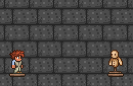
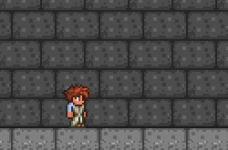
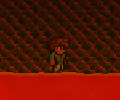

Tech and Scales is a Terraria mod based around a "Tech and Dragon" related theme. It will include many new items, weapons, armors, enemies and bosses, as well as a new biome to explore.
The inspiration for this mod came from a lack of science fiction related mods for Terraria. I plan to fill that gap and provide a exciting experience!
Status: In Progress, Minorly delayed by Terraria 1.4
Release Date: Fall 2020 at the soonest, Spring 2021 at the latest.
  Please note these images are from a very early version, they are subject to heavy change!